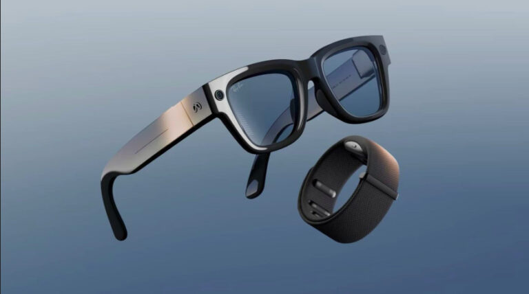
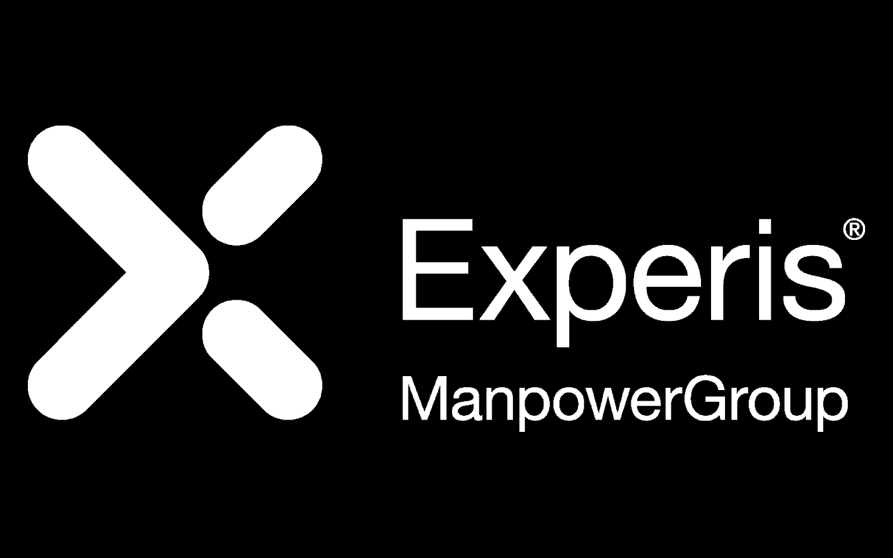

Designed and built AI-driven automated test cases for smart glasses using internal tools, which widened coverage and cut manual work on complex features. I also set up and ran several high-priority test passes for offshore teams validating AI-integrated hardware and machine learning models, so the hardware-software interactions were checked consistently across time zones.
Beyond the testing itself, I rewrote the team's internal documentation and processes, which made onboarding new people much faster. I also led deep-dive investigations into major regressions, writing them up in enough detail that other teams started using them as a debugging reference.

I worked at Experis as a Test Associate III, supporting large-scale projects for high-profile clients — exploratory testing, detailed bug investigations and documentation. In April 2025 I was named Tester of the Month. Clear documentation has been one of my strengths, and engineers across several teams have used mine as a debugging reference.
The role gave me a view of enterprise-level workflows and the quality standards expected at the top of the industry. Working alongside cross-functional teams to get issues found, documented and resolved is where I built most of my communication skills.